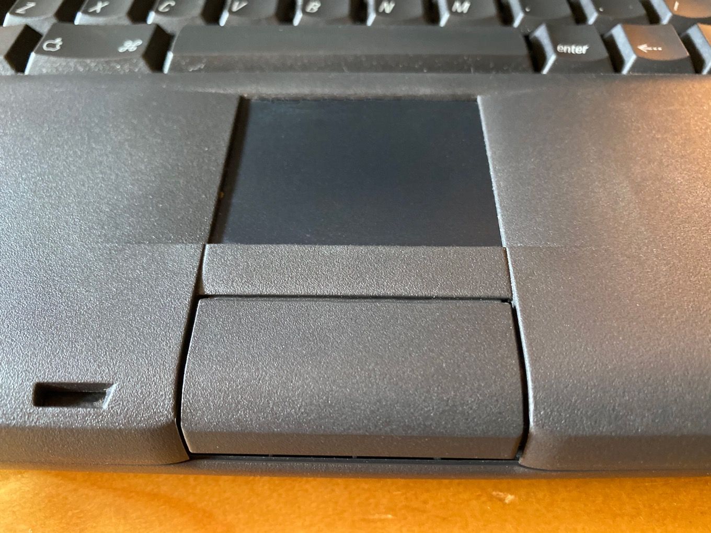

The Apple Macintosh PowerBook 500 features a 25 MHz 68LC040 processor, 4 MB or 12 MB of RAM, and a 160 MB or 240 MB hard drive in a sleek portable case with a 9.5" grayscale passive-matrix display.
The PowerBook 500 series introduced the "trackpad" -- where the cursor followed the movement of your finger on a "pad" rather than a plastic ball. The trackpad was a revolutionary input device and has been used since in the vast majority of modern notebooks. The PowerBook 500 series also introduced dual swappable "bays" that could be used to hold either one battery and a PCMCIA adapter or dual batteries to extend runtime.
The PowerBook 500 series (code named blackbird, which it shared with the older Macintosh IIfx) is a range of Apple Macintosh PowerBook portable computers first introduced by Apple Computer on May 16, 1994. It was the first to have stereo speakers, a trackpad and a built-in Ethernet networking.
It was the first PowerBook series to use Motorola 68lC040 CPU simultaneous with Duo 280 and be upgraded to the PowerPC architecture via a swap-out CPU daughter card (with the PowerPC and 68040 upgrades for sale), use 9.5-inch Dual Scan passive colour/B&W displays, 16-bit stereo sound with stereo speakers, have an expansion bay, PC Card capability, two battery bays (and a ten-minute sleep/clock battery, which allowed for main batteries to be swapped out while in sleep mode), full-size keyboard with F1–F12 function keys, be able to sleep while connected to an external monitor and have a battery contact cover included on the actual batteries. It included a single serial port which could be to connect to a serial printer or a network via Apple's LocalTalk. In another first, it also included an AAUI port for connecting to Ethernet networks.
The 500 series was discontinued completely with the introduction of the ill-fated PowerBook 5300. The PowerBook 190 was the de facto successor to the 500 and continued the only 68LC040 processor offering as the low end of the PowerPC-based PowerBook family.
In a survey taken in November 2000, Insanely Great Macintosh ranked the 540c No. 2 on its list of the all-time best PowerBook models made.
The PowerBook 500 series was introduced on May 16, 1994, with the high-end active matrix LCD PowerBook 540c and 540, with the passive matrix 520c and 520 soon after. One of its marketing highlights was the promise of a PowerPC upgrade to its CPU and PC Card (PCMCIA) expansion. The introduction of this model came at the time of Apple's changeover to the new PowerPC chip from the 68k line of CPUs, and Apple's advertising and promise of the PowerPC was the cause of headaches to the company. The strong demand for its ground-breaking design and Apple's incorrect market prediction that customers would wait for the fully PowerPC
PowerBooks resulted in shortages early on.
In due course the 540 was dropped from the line, 8 MB of additional memory and the modem was offered installed from the factory, hard drive capacity was increased (from 160 and 240 to 320 and 500 MB), and the installed system upped from System 7.1.1 to 7.5. The PC Card Cage was also released, allowing Macintosh users to add PCMCIA capability to their laptops for the first time.In 1995, Apple gave permission for Apple Japan to introduce an updated version, called the 550c, with a bigger display (10.4 inches), CPU with FPU (68040), bigger hard drive, and Japanese keyboard with black case. It was only sold in Japan and never received FCC certification. With delays for the new PowerPC PowerBook 5300, demand for the PPC upgrade mounted, and Newer Technology began to market the upgrade before Apple did, although they had produced the upgrade modules for Apple first. What's more, they offered 117 MHz versions over Apple's 100 (actually, 99) MHz offering. Soon thereafter, Newer Technology introduced a 167 MHz model that outperformed the fastest PowerBook 5300, the $6,800 5300ce, at a time when problems with that line became a real issue to Apple.
About the time Apple introduced the PowerBook 1400, Newer Technology introduced a 183 MHz upgrade with 128 KB of L2 cache that kept it ahead of the power curve in performance. Newer Technology stated they could not produce more of the 183 MHz upgrades because the supply of connectors was exhausted.
The 500 series of PowerBooks included the ability to use two batteries at the same time, allowing for 4 hours of battery life from two installed charged batteries. However the left battery also had an internal PDS slot that allowed for custom modules to be installed. Despite prototypes having been made, only two devices reached the market.
One is the PCMCIA module. There were three versions; RevA, RevB and RevC. The RevC is the most useful as it can take 16bit WiFi cards, allowing the possibility to get a Powerbook 5xx connected online or in the home network using a technology that was developed after the Powerbook 5xxs were discontinued by Apple. The different revisions of the PCMCIA module were released by Apple to accommodate the developing PCMCIA standard. These modules are difficult to find, and the RevC module is in particular demand because it alone works with 16-bit WiFi cards.
PC Card (PCMCIA) cage, 16-bit, 2 Type I/II or 1 Type III cards, using a 68000 CPU to convert the PC Card protocol to PDS.
The other is the FPU co-processor, to make up for the lack of one in the PowerBook's 68LC040 CPU. The FPU module uses a 68882 FPU co-processor made by Sonnet.
In total, almost 600,000 PowerBook 500 series units were produced, compared to 300,000 PowerBook 5300 units.
‘Source – website like wikipidea, macworld, macspecs, etc’